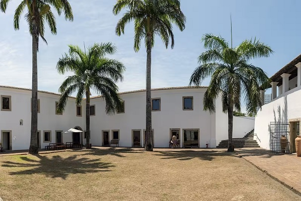
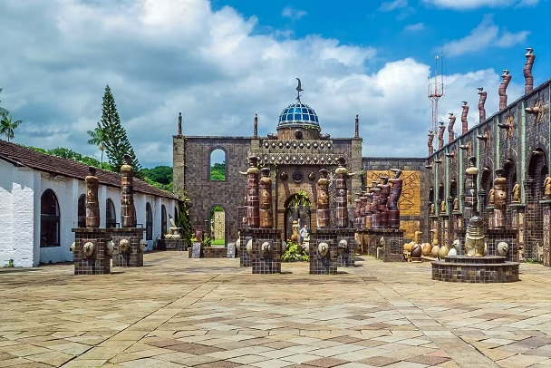

Recife Antigo
Recife, mais conhecido como Recife Antigo, é um bairro da cidade do Recife, Pernambuco, Brasil que corresponde à parte leste do seu Centro Histórico.
Em seu ponto mais oriental, no Porto do Recife, situa-se a Praça Rio Branco – o Marco Zero, margeada pelo encontro dos rios Capibaribe e Beberibe com o Oceano Atlântico
Forte das Cinco Pontas
Recife, mais conhecido como Recife Antigo, é um bairro da cidade do Recife, Pernambuco, Brasil que corresponde à parte leste do seu Centro Histórico.
Em seu ponto mais oriental, no Porto do Recife, situa-se a Praça Rio Branco – o Marco Zero, margeada pelo encontro dos rios Capibaribe e Beberibe com o Oceano Atlântico
Oficina de Cerâmica Francisco Brennand
O Forte das Cinco Pontas representa a última construção dos holandeses na cidade, com o objetivo de protegê-la de possíveis ataques e também para auxiliar na rede de distribuição de água. É um misto de cultura e história em um único roteiro.
No lugar, ainda funciona o Museu da Cidade, com exposições temporárias que abordam a história da capital pernambucana. Além disso, é muito comum anunciarem programações temporárias com eventos e exposições aleatórias. Logo, uma dica antes de visitar: busque informações atualizadas no site oficial do museu.
- 
- 